#Import library yang digunakan
import pandas as pd
import numpy as np
import matplotlib.pyplot as plt
import seaborn as snsTUGAS 4 - CLASSIFICATION TREE
Kelompok 11 - Statistika 2023A
Anggota Kelompok : - Nisrina Alissy (1314623008) - Jessica Aurelia P. (1314623031)
Input data
#input data
link = "https://github.com/jessicaureliap/Tugas_PDS/blob/main/winequality-red.csv"
df = pd.read_csv(link)
df.head()--------------------------------------------------------------------------- HTTPError Traceback (most recent call last) /tmp/ipython-input-1685197279.py in <cell line: 0>() 1 #input data 2 link = "https://github.com/jessicaureliap/Tugas_PDS/blob/main/winequality-red.csv" ----> 3 df = pd.read_csv(link) 4 df.head() /usr/local/lib/python3.12/dist-packages/pandas/io/parsers/readers.py in read_csv(filepath_or_buffer, sep, delimiter, header, names, index_col, usecols, dtype, engine, converters, true_values, false_values, skipinitialspace, skiprows, skipfooter, nrows, na_values, keep_default_na, na_filter, verbose, skip_blank_lines, parse_dates, infer_datetime_format, keep_date_col, date_parser, date_format, dayfirst, cache_dates, iterator, chunksize, compression, thousands, decimal, lineterminator, quotechar, quoting, doublequote, escapechar, comment, encoding, encoding_errors, dialect, on_bad_lines, delim_whitespace, low_memory, memory_map, float_precision, storage_options, dtype_backend) 1024 kwds.update(kwds_defaults) 1025 -> 1026 return _read(filepath_or_buffer, kwds) 1027 1028 /usr/local/lib/python3.12/dist-packages/pandas/io/parsers/readers.py in _read(filepath_or_buffer, kwds) 618 619 # Create the parser. --> 620 parser = TextFileReader(filepath_or_buffer, **kwds) 621 622 if chunksize or iterator: /usr/local/lib/python3.12/dist-packages/pandas/io/parsers/readers.py in __init__(self, f, engine, **kwds) 1618 1619 self.handles: IOHandles | None = None -> 1620 self._engine = self._make_engine(f, self.engine) 1621 1622 def close(self) -> None: /usr/local/lib/python3.12/dist-packages/pandas/io/parsers/readers.py in _make_engine(self, f, engine) 1878 if "b" not in mode: 1879 mode += "b" -> 1880 self.handles = get_handle( 1881 f, 1882 mode, /usr/local/lib/python3.12/dist-packages/pandas/io/common.py in get_handle(path_or_buf, mode, encoding, compression, memory_map, is_text, errors, storage_options) 726 727 # open URLs --> 728 ioargs = _get_filepath_or_buffer( 729 path_or_buf, 730 encoding=encoding, /usr/local/lib/python3.12/dist-packages/pandas/io/common.py in _get_filepath_or_buffer(filepath_or_buffer, encoding, compression, mode, storage_options) 382 # assuming storage_options is to be interpreted as headers 383 req_info = urllib.request.Request(filepath_or_buffer, headers=storage_options) --> 384 with urlopen(req_info) as req: 385 content_encoding = req.headers.get("Content-Encoding", None) 386 if content_encoding == "gzip": /usr/local/lib/python3.12/dist-packages/pandas/io/common.py in urlopen(*args, **kwargs) 287 import urllib.request 288 --> 289 return urllib.request.urlopen(*args, **kwargs) 290 291 /usr/lib/python3.12/urllib/request.py in urlopen(url, data, timeout, cafile, capath, cadefault, context) 213 else: 214 opener = _opener --> 215 return opener.open(url, data, timeout) 216 217 def install_opener(opener): /usr/lib/python3.12/urllib/request.py in open(self, fullurl, data, timeout) 519 for processor in self.process_response.get(protocol, []): 520 meth = getattr(processor, meth_name) --> 521 response = meth(req, response) 522 523 return response /usr/lib/python3.12/urllib/request.py in http_response(self, request, response) 628 # request was successfully received, understood, and accepted. 629 if not (200 <= code < 300): --> 630 response = self.parent.error( 631 'http', request, response, code, msg, hdrs) 632 /usr/lib/python3.12/urllib/request.py in error(self, proto, *args) 557 if http_err: 558 args = (dict, 'default', 'http_error_default') + orig_args --> 559 return self._call_chain(*args) 560 561 # XXX probably also want an abstract factory that knows when it makes /usr/lib/python3.12/urllib/request.py in _call_chain(self, chain, kind, meth_name, *args) 490 for handler in handlers: 491 func = getattr(handler, meth_name) --> 492 result = func(*args) 493 if result is not None: 494 return result /usr/lib/python3.12/urllib/request.py in http_error_default(self, req, fp, code, msg, hdrs) 637 class HTTPDefaultErrorHandler(BaseHandler): 638 def http_error_default(self, req, fp, code, msg, hdrs): --> 639 raise HTTPError(req.full_url, code, msg, hdrs, fp) 640 641 class HTTPRedirectHandler(BaseHandler): HTTPError: HTTP Error 404: Not Found
EDA
df.columnsIndex(['buying', 'biaya perawatan mobil', 'juml pintu mobil', 'jumlah person',
'ukuran bagasi mobil', 'keamanan', 'class'],
dtype='object')df.info()<class 'pandas.core.frame.DataFrame'>
RangeIndex: 1728 entries, 0 to 1727
Data columns (total 7 columns):
# Column Non-Null Count Dtype
--- ------ -------------- -----
0 buying 1728 non-null object
1 biaya perawatan mobil 1728 non-null object
2 juml pintu mobil 1728 non-null object
3 jumlah person 1728 non-null object
4 ukuran bagasi mobil 1728 non-null object
5 keamanan 1728 non-null object
6 class 1728 non-null object
dtypes: object(7)
memory usage: 94.6+ KB# Mengecek missing value
df.isna().sum()| 0 | |
|---|---|
| buying | 0 |
| biaya perawatan mobil | 0 |
| juml pintu mobil | 0 |
| jumlah person | 0 |
| ukuran bagasi mobil | 0 |
| keamanan | 0 |
| class | 0 |
#Cek apakah terdapat duplikat data
df.duplicated().any()np.False_#ringkasan statistik
df.describe()| buying | biaya perawatan mobil | juml pintu mobil | jumlah person | ukuran bagasi mobil | keamanan | class | |
|---|---|---|---|---|---|---|---|
| count | 1728 | 1728 | 1728 | 1728 | 1728 | 1728 | 1728 |
| unique | 4 | 4 | 4 | 3 | 3 | 3 | 4 |
| top | vhigh | vhigh | 2 | 2 | small | low | unacc |
| freq | 432 | 432 | 432 | 576 | 576 | 576 | 1210 |
#checking for rare category
for col in df.columns:
print(f"\n=== {col.upper()} ===")
print(df[col].value_counts())
=== BUYING ===
buying
vhigh 432
high 432
med 432
low 432
Name: count, dtype: int64
=== BIAYA PERAWATAN MOBIL ===
biaya perawatan mobil
vhigh 432
high 432
med 432
low 432
Name: count, dtype: int64
=== JUML PINTU MOBIL ===
juml pintu mobil
2 432
3 432
4 432
5more 432
Name: count, dtype: int64
=== JUMLAH PERSON ===
jumlah person
2 576
4 576
more 576
Name: count, dtype: int64
=== UKURAN BAGASI MOBIL ===
ukuran bagasi mobil
small 576
med 576
big 576
Name: count, dtype: int64
=== KEAMANAN ===
keamanan
low 576
med 576
high 576
Name: count, dtype: int64
=== CLASS ===
class
unacc 1210
acc 384
good 69
vgood 65
Name: count, dtype: int64#Bar Chart Horizontal for checking rare category
plt.figure(figsize=(14, 20))
for i, col in enumerate(df.columns):
plt.subplot(4, 2, i+1)
df[col].value_counts().plot(kind='barh', color='#b0c885')
plt.title(f"Distribusi Kategori: {col}")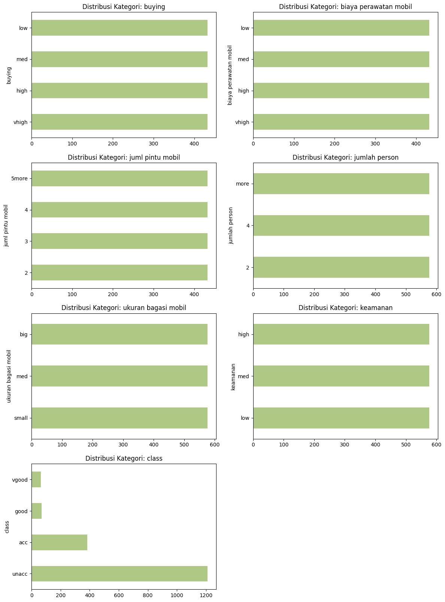
#pie chart just for target
plt.figure(figsize=(6, 6))
df['class'].value_counts().plot(
kind='pie',
autopct='%1.1f%%',
startangle=90,
colors=sns.color_palette("Greens")
)
plt.ylabel('')
plt.title("Proporsi Target (class)")
plt.show()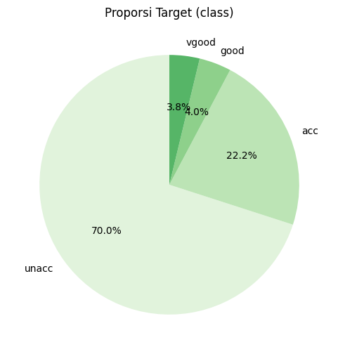
#making a crosstab heatmap
target = "class"
for col in df.columns:
if col == target:
continue
ct = pd.crosstab(df[col], df[target])
plt.figure(figsize=(8, 5))
sns.heatmap(ct, annot=True, fmt='d', cmap="YlGnBu")
plt.title(f"Crosstab Heatmap: {col} vs {target}")
plt.ylabel(col)
plt.xlabel(target)
plt.show()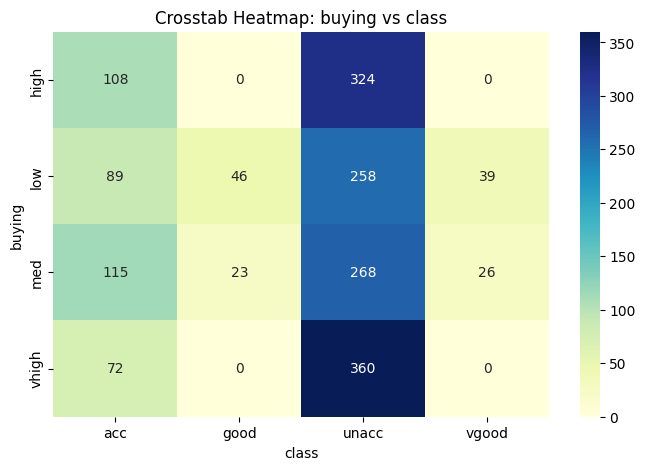
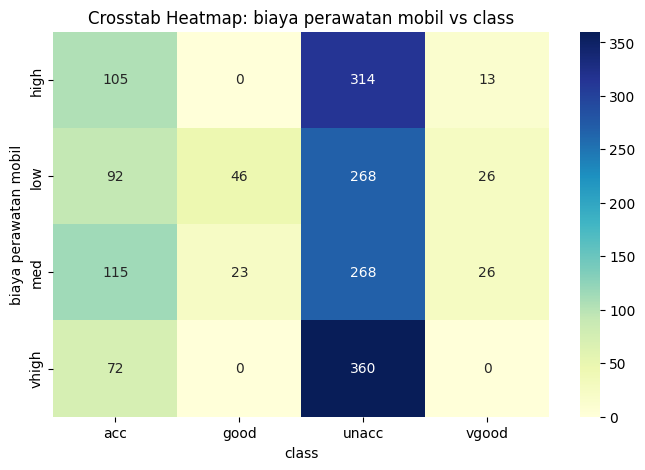
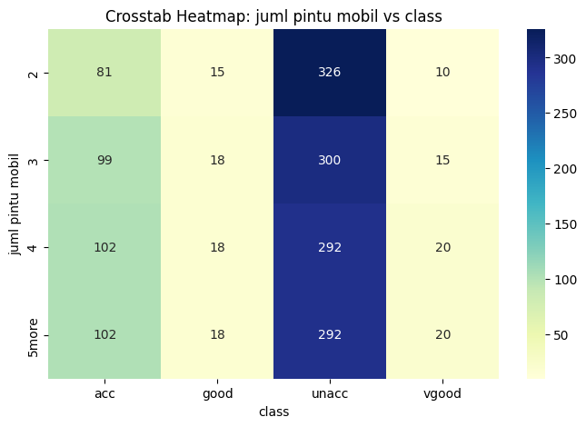
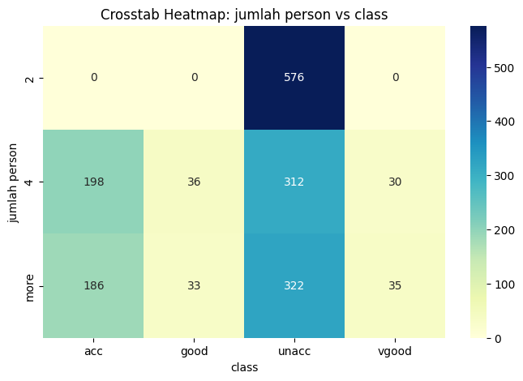
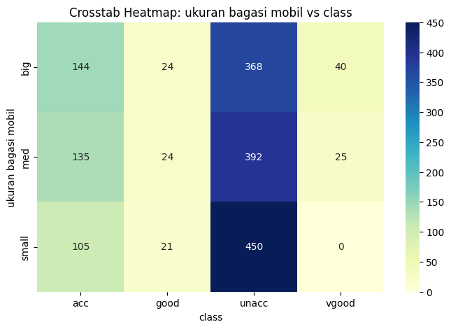
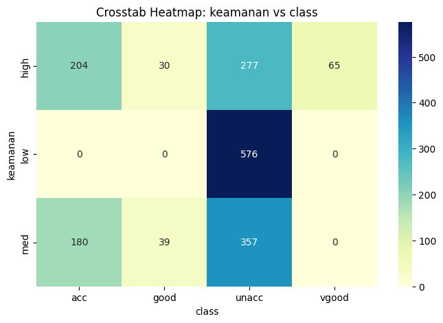
#Chi-square + Cramer’s V antar fitur (Heatmap)
from scipy.stats import chi2_contingency
x = df.drop(['class'], axis=1)
y = df['class']
def cramers_v(x, y):
ct = pd.crosstab(x, y)
chi2 = chi2_contingency(ct)[0]
n = ct.sum().sum()
r, k = ct.shape
return np.sqrt(chi2 / (n * (min(r, k) - 1)))
cols = df.columns
cramers_matrix = pd.DataFrame(np.zeros((len(cols), len(cols))),
index=cols, columns=cols)
for col1 in cols:
for col2 in cols:
cramers_matrix.loc[col1, col2] = cramers_v(df[col1], df[col2])
plt.figure(figsize=(10, 8))
sns.heatmap(cramers_matrix, annot=True, cmap="Greens", fmt=".2f")
plt.title("Cramer's V antar Fitur")
plt.show()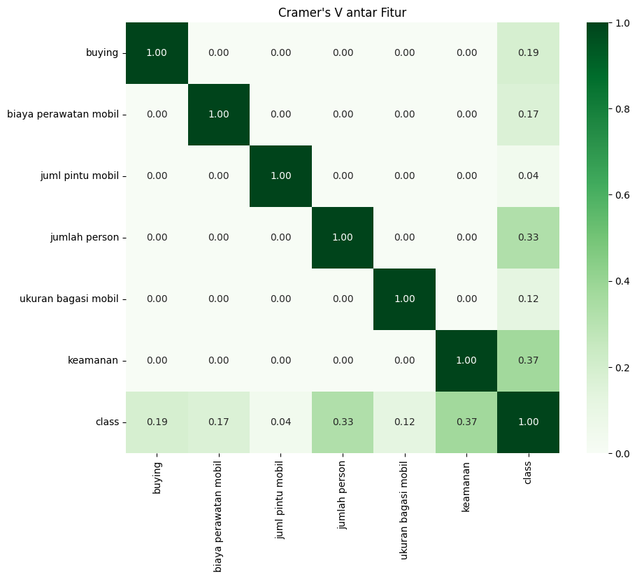
#bivariate countplot
target = 'class'
features = [col for col in df.columns if col != target]
plt.figure(figsize=(16, 20))
for i, col in enumerate(features):
plt.subplot(3, 2, i+1)
sns.countplot(data=df, x=col, hue=target)
plt.title(f"{col} vs {target}")
plt.xticks(rotation=45)
plt.ylabel("Count")
plt.tight_layout()
plt.show()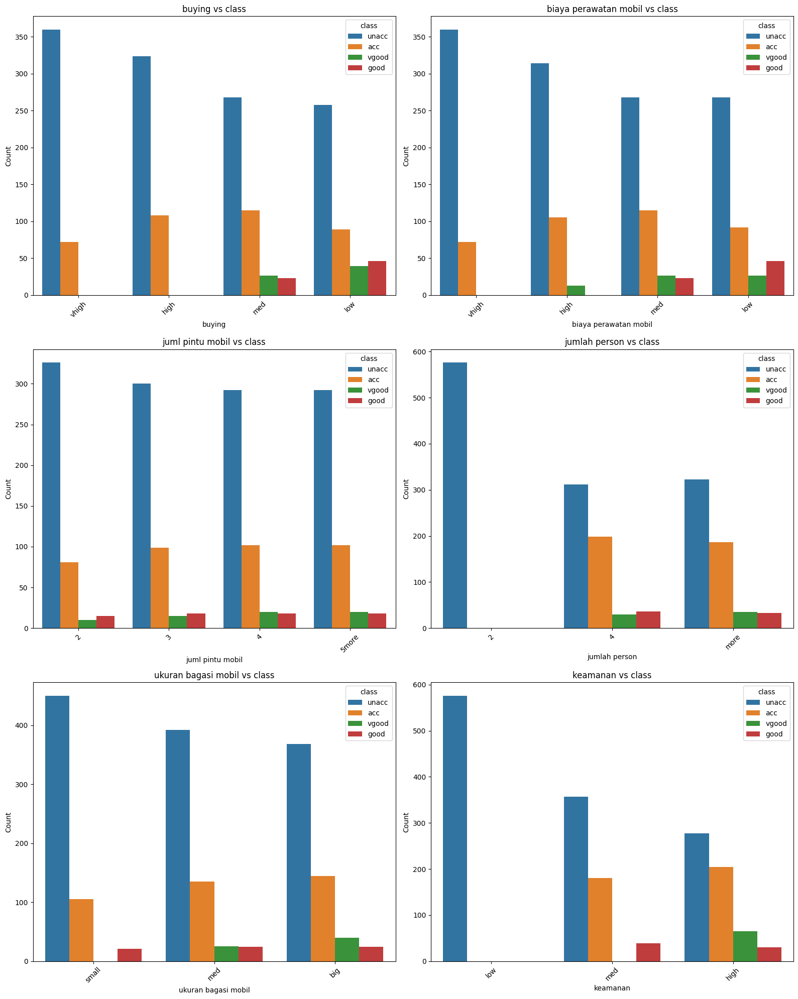
#cek outlier
# Boxplot untuk mengecek outlier (dengan data awal)
kolom_numerik = df.describe().columns[:7]
# Buat palet
palette = sns.color_palette("hls", len(kolom_numerik))
plt.figure(figsize=(18, 18))
# Loop melalui kolom dan indeks
for i in enumerate(kolom_numerik):
# i[0] adalah indeks (0, 1, 2...), i[1] adalah nama kolom
plt.subplot(5, 5, i[0] + 1)
sns.boxplot(
x=df[i[1]],
color=palette[i[0]]
)
plt.title(i[1], fontsize=10)
plt.xlabel('')
plt.suptitle("Pengecekan Outlier dengan Boxplot", y=1.02, fontsize=16, fontweight='bold')
plt.tight_layout(pad=3.0) # Menambahkan padding agar lebih rapi
plt.show()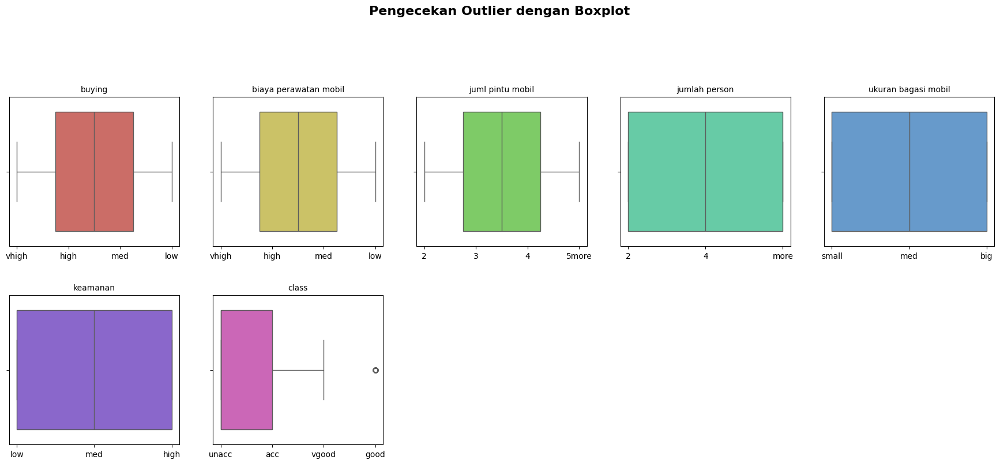
#proportion target per category
#tambahan aje
for col in features:
print(f"\n=== Proporsi class berdasarkan kategori: {col} ===\n")
prop = (pd.crosstab(df[col], df[target], normalize='index') * 100).round(2)
print(prop)
#visualization
for col in features:
prop = pd.crosstab(df[col], df[target], normalize='index')
prop.plot(kind='bar', figsize=(8, 4), colormap="Greens")
plt.title(f"Proporsi {target} dalam setiap kategori {col}")
plt.ylabel("Proporsi")
plt.legend(title=target)
plt.xticks(rotation=45)
plt.show()
=== Proporsi class berdasarkan kategori: buying ===
class acc good unacc vgood
buying
high 25.00 0.00 75.00 0.00
low 20.60 10.65 59.72 9.03
med 26.62 5.32 62.04 6.02
vhigh 16.67 0.00 83.33 0.00
=== Proporsi class berdasarkan kategori: biaya perawatan mobil ===
class acc good unacc vgood
biaya perawatan mobil
high 24.31 0.00 72.69 3.01
low 21.30 10.65 62.04 6.02
med 26.62 5.32 62.04 6.02
vhigh 16.67 0.00 83.33 0.00
=== Proporsi class berdasarkan kategori: juml pintu mobil ===
class acc good unacc vgood
juml pintu mobil
2 18.75 3.47 75.46 2.31
3 22.92 4.17 69.44 3.47
4 23.61 4.17 67.59 4.63
5more 23.61 4.17 67.59 4.63
=== Proporsi class berdasarkan kategori: jumlah person ===
class acc good unacc vgood
jumlah person
2 0.00 0.00 100.00 0.00
4 34.38 6.25 54.17 5.21
more 32.29 5.73 55.90 6.08
=== Proporsi class berdasarkan kategori: ukuran bagasi mobil ===
class acc good unacc vgood
ukuran bagasi mobil
big 25.00 4.17 63.89 6.94
med 23.44 4.17 68.06 4.34
small 18.23 3.65 78.12 0.00
=== Proporsi class berdasarkan kategori: keamanan ===
class acc good unacc vgood
keamanan
high 35.42 5.21 48.09 11.28
low 0.00 0.00 100.00 0.00
med 31.25 6.77 61.98 0.00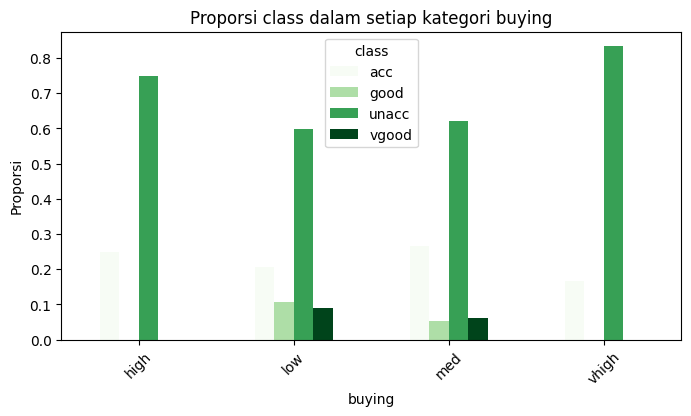
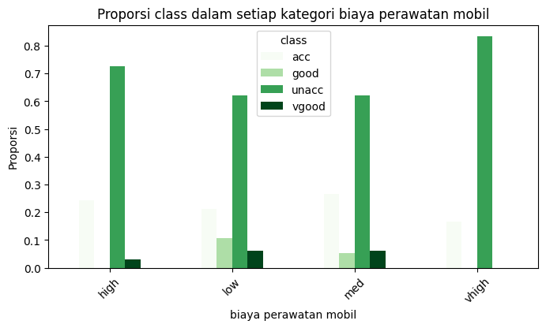
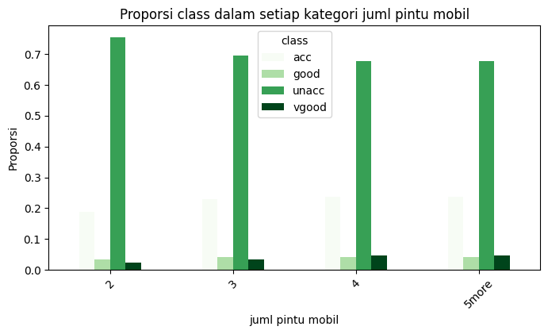
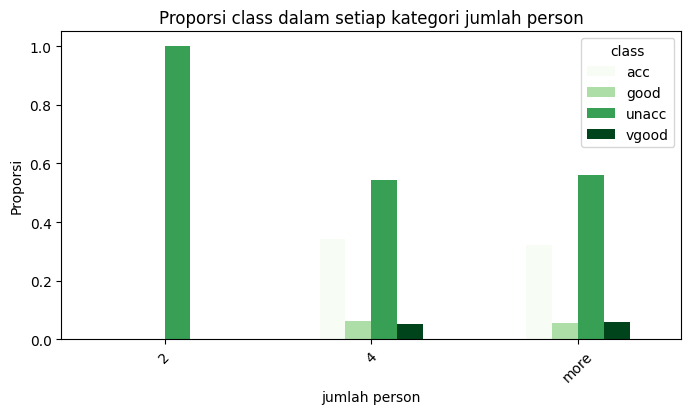
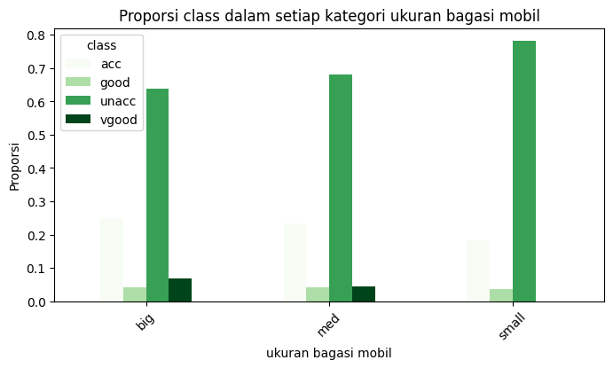
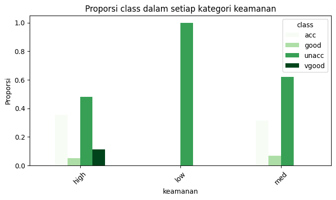
Preprocessing data
#membagi kelas target dan fitur
X = df.drop(['class'], axis=1)
y = df['class']X.head()| buying | biaya perawatan mobil | juml pintu mobil | jumlah person | ukuran bagasi mobil | keamanan | |
|---|---|---|---|---|---|---|
| 0 | vhigh | vhigh | 2 | 2 | small | low |
| 1 | vhigh | vhigh | 2 | 2 | small | med |
| 2 | vhigh | vhigh | 2 | 2 | small | high |
| 3 | vhigh | vhigh | 2 | 2 | med | low |
| 4 | vhigh | vhigh | 2 | 2 | med | med |
y.head()| class | |
|---|---|
| 0 | unacc |
| 1 | unacc |
| 2 | unacc |
| 3 | unacc |
| 4 | unacc |
#split data into train and split
from sklearn.model_selection import train_test_split
X_train, X_test, y_train, y_test = train_test_split(X, y, test_size = 0.3, random_state = 42)
print("\n Hasil Pembagian Data (70:30):")
print(f"X_train (Data Latih Fitur): {X_train.shape}")
print(f"X_test (Data Uji Fitur): {X_test.shape}")
print(f"y_train (Data Latih Target): {y_train.shape}")
print(f"y_test (Data Uji Target): {y_test.shape}")
Hasil Pembagian Data (70:30):
X_train (Data Latih Fitur): (1209, 6)
X_test (Data Uji Fitur): (519, 6)
y_train (Data Latih Target): (1209,)
y_test (Data Uji Target): (519,)X_train.dtypes| 0 | |
|---|---|
| buying | object |
| biaya perawatan mobil | object |
| juml pintu mobil | object |
| jumlah person | object |
| ukuran bagasi mobil | object |
| keamanan | object |
X_train.head()| buying | biaya perawatan mobil | juml pintu mobil | jumlah person | ukuran bagasi mobil | keamanan | |
|---|---|---|---|---|---|---|
| 1178 | med | med | 5more | 4 | big | high |
| 585 | high | high | 3 | more | small | low |
| 1552 | low | med | 3 | 4 | med | med |
| 1169 | med | med | 5more | 2 | big | high |
| 1033 | med | high | 4 | 2 | big | med |
!pip install category-encodersRequirement already satisfied: category-encoders in /usr/local/lib/python3.12/dist-packages (2.9.0)
Requirement already satisfied: numpy>=1.14.0 in /usr/local/lib/python3.12/dist-packages (from category-encoders) (2.0.2)
Requirement already satisfied: pandas>=1.0.5 in /usr/local/lib/python3.12/dist-packages (from category-encoders) (2.2.2)
Requirement already satisfied: patsy>=0.5.1 in /usr/local/lib/python3.12/dist-packages (from category-encoders) (1.0.2)
Requirement already satisfied: scikit-learn>=1.6.0 in /usr/local/lib/python3.12/dist-packages (from category-encoders) (1.6.1)
Requirement already satisfied: scipy>=1.0.0 in /usr/local/lib/python3.12/dist-packages (from category-encoders) (1.16.3)
Requirement already satisfied: statsmodels>=0.9.0 in /usr/local/lib/python3.12/dist-packages (from category-encoders) (0.14.5)
Requirement already satisfied: python-dateutil>=2.8.2 in /usr/local/lib/python3.12/dist-packages (from pandas>=1.0.5->category-encoders) (2.9.0.post0)
Requirement already satisfied: pytz>=2020.1 in /usr/local/lib/python3.12/dist-packages (from pandas>=1.0.5->category-encoders) (2025.2)
Requirement already satisfied: tzdata>=2022.7 in /usr/local/lib/python3.12/dist-packages (from pandas>=1.0.5->category-encoders) (2025.2)
Requirement already satisfied: joblib>=1.2.0 in /usr/local/lib/python3.12/dist-packages (from scikit-learn>=1.6.0->category-encoders) (1.5.2)
Requirement already satisfied: threadpoolctl>=3.1.0 in /usr/local/lib/python3.12/dist-packages (from scikit-learn>=1.6.0->category-encoders) (3.6.0)
Requirement already satisfied: packaging>=21.3 in /usr/local/lib/python3.12/dist-packages (from statsmodels>=0.9.0->category-encoders) (25.0)
Requirement already satisfied: six>=1.5 in /usr/local/lib/python3.12/dist-packages (from python-dateutil>=2.8.2->pandas>=1.0.5->category-encoders) (1.17.0)#encode variables
import category_encoders as ce
encoder = ce.OrdinalEncoder(cols=['buying', 'biaya perawatan mobil', 'juml pintu mobil', 'jumlah person',
'ukuran bagasi mobil', 'keamanan'])
X_train = encoder.fit_transform(X_train)
X_test = encoder.transform(X_test)X_train.head()| buying | biaya perawatan mobil | juml pintu mobil | jumlah person | ukuran bagasi mobil | keamanan | |
|---|---|---|---|---|---|---|
| 1178 | 1 | 1 | 1 | 1 | 1 | 1 |
| 585 | 2 | 2 | 2 | 2 | 2 | 2 |
| 1552 | 3 | 1 | 2 | 1 | 3 | 3 |
| 1169 | 1 | 1 | 1 | 3 | 1 | 1 |
| 1033 | 1 | 2 | 3 | 3 | 1 | 3 |
X_test.head()| buying | biaya perawatan mobil | juml pintu mobil | jumlah person | ukuran bagasi mobil | keamanan | |
|---|---|---|---|---|---|---|
| 599 | 2 | 2 | 3 | 3 | 3 | 1 |
| 1201 | 1 | 4 | 4 | 1 | 3 | 3 |
| 628 | 2 | 2 | 1 | 3 | 1 | 3 |
| 1498 | 3 | 2 | 1 | 1 | 3 | 3 |
| 1263 | 1 | 4 | 3 | 2 | 3 | 2 |
Menerapkan SMOTE
from imblearn.over_sampling import SMOTE
print("1. Penerapan SMOTE")
# Inisialisasi SMOTE
sm = SMOTE(sampling_strategy='auto', random_state=42)
# Lakukan Resampling pada Data Training SAJA
X_train_smote, y_train_smote = sm.fit_resample(X_train, y_train)
print(f" Data Training Asli: {len(y_train)} sampel")
print(f" Data Training Setelah SMOTE: {len(y_train_smote)} sampel")1. Penerapan SMOTE
Data Training Asli: 1209 sampel
Data Training Setelah SMOTE: 3408 sampelDecision tree classifier
# import DecisionTreeClassifier
from sklearn import tree
from sklearn.tree import DecisionTreeClassifierOptimasi Hyperparameter pada data SMOTE
from sklearn.model_selection import GridSearchCV
from sklearn.metrics import make_scorer, f1_score
print("Optimasi Hyperparameter dengan Grid Search")
# Definisikan Metrik (F1-score Weighted)
f1_weighted_scorer = make_scorer(f1_score, average='weighted')
# Definisikan Ruang Pencarian (param_grid)
param_grid = {
'criterion': ['gini', 'entropy'],
'max_depth': [5, 8, 12, None],
'min_samples_split': [10, 20],
'min_samples_leaf': [5, 10],
'random_state': [42]
}Optimasi Hyperparameter dengan Grid Searchdt_model = DecisionTreeClassifier()
grid_search = GridSearchCV(
estimator=dt_model,
param_grid=param_grid,
scoring=f1_weighted_scorer,
cv=5,
n_jobs=-1
)# Latih Grid Search pada DATA SMOTE
grid_search.fit(X_train_smote, y_train_smote)
# Dapatkan Model Terbaik
best_dt_model = grid_search.best_estimator_
print(f" Hyperparameter Terbaik: {grid_search.best_params_}") Hyperparameter Terbaik: {'criterion': 'gini', 'max_depth': 5, 'min_samples_leaf': 5, 'min_samples_split': 10, 'random_state': 42}/usr/local/lib/python3.12/dist-packages/sklearn/model_selection/_search.py:1108: UserWarning: One or more of the test scores are non-finite: [nan nan nan nan nan nan nan nan nan nan nan nan nan nan nan nan nan nan
nan nan nan nan nan nan nan nan nan nan nan nan nan nan]
warnings.warn(y_pred_final = best_dt_model.predict(X_test)
y_score_final = best_dt_model.predict_proba(X_test)#Visualisasi dari decision tree
import graphviz
dot_data = tree.export_graphviz(best_dt_model, out_file=None,
feature_names=X_train_smote.columns,
class_names=y_train_smote,
filled=True, rounded=True,
special_characters=True)
graph = graphviz.Source(dot_data)
graph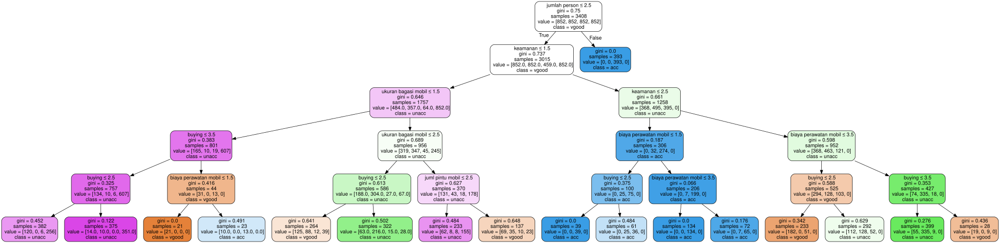
Dengan Data Asli Tanpa SMOTE
# Menginisiasi dengan kriteria gini index
clf_gini = DecisionTreeClassifier(criterion='gini', max_depth=3, random_state=42)
# fit the model
clf_gini.fit(X_train, y_train)DecisionTreeClassifier(max_depth=3, random_state=42)In a Jupyter environment, please rerun this cell to show the HTML representation or trust the notebook.
On GitHub, the HTML representation is unable to render, please try loading this page with nbviewer.org.
DecisionTreeClassifier(max_depth=3, random_state=42)
#Prediksi pada data testing dengan kriteria gini index
y_pred_gini = clf_gini.predict(X_test)#Membandingkan akurasi dari train set dan test set untuk cek overfitting
y_pred_train_gini = clf_gini.predict(X_train)
y_pred_train_giniarray(['acc', 'unacc', 'unacc', ..., 'acc', 'unacc', 'unacc'],
dtype=object)#Cek Underfitting an Overfitting dari skor Akurasi
print('Training set score: {:.4f}'.format(clf_gini.score(X_train, y_train)))
print('Test set score: {:.4f}'.format(clf_gini.score(X_test, y_test)))Training set score: 0.7767
Test set score: 0.7592#Visualisasi dari decision tree
import graphviz
dot_data = tree.export_graphviz(clf_gini, out_file=None,
feature_names=X_train.columns,
class_names=y_train,
filled=True, rounded=True,
special_characters=True)
graph = graphviz.Source(dot_data)
graph2.Classification tree (kriteria entrophy)
# Inisiasi dengan kriteria entropy
clf_en = DecisionTreeClassifier(criterion='entropy', max_depth=3, random_state=42)
# fit the model
clf_en.fit(X_train, y_train)DecisionTreeClassifier(criterion='entropy', max_depth=3, random_state=42)In a Jupyter environment, please rerun this cell to show the HTML representation or trust the notebook.
On GitHub, the HTML representation is unable to render, please try loading this page with nbviewer.org.
DecisionTreeClassifier(criterion='entropy', max_depth=3, random_state=42)
#Prediksi data testing dengan kriteria entropy
y_pred_en = clf_en.predict(X_test)#Cek akurasi skor dengan criterion entropy
from sklearn.metrics import accuracy_score
print('Model accuracy score with criterion entropy: {0:0.4f}'. format(accuracy_score(y_test, y_pred_en)))Model accuracy score with criterion entropy: 0.7592#Compare the train-set and test-set accuracy
y_pred_train_en = clf_en.predict(X_train)
y_pred_train_enprint('Training-set accuracy score: {0:0.4f}'. format(accuracy_score(y_train, y_pred_train_en)))#Cek underfitting dan overfitting
print('Training set score: {:.4f}'.format(clf_en.score(X_train, y_train)))
print('Test set score: {:.4f}'.format(clf_en.score(X_test, y_test)))Training set score: 0.7767
Test set score: 0.7592#Visualisasi dari decision tree
import graphviz
dot_data = tree.export_graphviz(clf_en, out_file=None,
feature_names=X_train.columns,
class_names=y_train,
filled=True, rounded=True,
special_characters=True)
graph = graphviz.Source(dot_data)
graph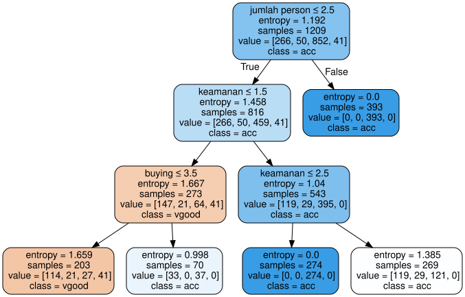
Evaluasi Model
Classification Tree (Gini Index)
Dengan Data Asli Tanpa SMOTE
#Confusion matrix
from sklearn.metrics import confusion_matrix
cm = confusion_matrix(y_test, y_pred_gini)
print('Confusion matrix\n\n', cm)Confusion matrix
[[ 44 0 74 0]
[ 9 0 10 0]
[ 8 0 350 0]
[ 24 0 0 0]]#Classification report yang menampilkan precission, recall, f1-score
from sklearn.metrics import classification_report
print(classification_report(y_test, y_pred_gini)) precision recall f1-score support
acc 0.52 0.37 0.43 118
good 0.00 0.00 0.00 19
unacc 0.81 0.98 0.88 358
vgood 0.00 0.00 0.00 24
accuracy 0.76 519
macro avg 0.33 0.34 0.33 519
weighted avg 0.67 0.76 0.71 519
/usr/local/lib/python3.12/dist-packages/sklearn/metrics/_classification.py:1565: UndefinedMetricWarning: Precision is ill-defined and being set to 0.0 in labels with no predicted samples. Use `zero_division` parameter to control this behavior.
_warn_prf(average, modifier, f"{metric.capitalize()} is", len(result))
/usr/local/lib/python3.12/dist-packages/sklearn/metrics/_classification.py:1565: UndefinedMetricWarning: Precision is ill-defined and being set to 0.0 in labels with no predicted samples. Use `zero_division` parameter to control this behavior.
_warn_prf(average, modifier, f"{metric.capitalize()} is", len(result))
/usr/local/lib/python3.12/dist-packages/sklearn/metrics/_classification.py:1565: UndefinedMetricWarning: Precision is ill-defined and being set to 0.0 in labels with no predicted samples. Use `zero_division` parameter to control this behavior.
_warn_prf(average, modifier, f"{metric.capitalize()} is", len(result))#Membuat heatmap confussion matrix
#Kelas
kelas = ['unacc', 'acc', 'good', 'vgood']
# --- Membuat Heatmap ---
plt.figure(figsize=(8, 6))
# 1. Menggunakan sns.heatmap
sns.heatmap(
cm,
annot=True, # Menampilkan nilai numerik di setiap sel
fmt='d', # Memastikan angka ditampilkan sebagai integer (bukan notasi ilmiah)
cmap='Greens',
xticklabels=kelas, # Label sumbu X (Prediksi)
yticklabels=kelas # Label sumbu Y (Aktual)
)
# 2. Menambahkan Label dan Judul
plt.title('Confusion Matrix - Decision Tree (Gini Index)')
plt.xlabel('Prediksi Kelas')
plt.ylabel('Kelas Aktual')
plt.show()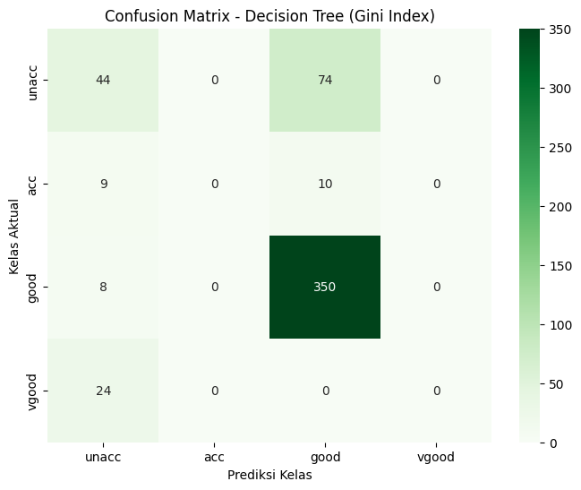
Dengan SMOTE dan Optimasi Hyperparameter
#Confusion matrix
from sklearn.metrics import confusion_matrix
cm_final= confusion_matrix(y_test, y_pred_final)
print('Confusion matrix\n\n', cm)Confusion matrix
[[ 44 0 74 0]
[ 9 0 10 0]
[ 8 0 350 0]
[ 24 0 0 0]]from sklearn.metrics import classification_report
print(classification_report(y_test, y_pred_final)) precision recall f1-score support
acc 0.56 0.37 0.45 118
good 0.15 0.68 0.24 19
unacc 0.99 0.83 0.90 358
vgood 0.33 0.75 0.46 24
accuracy 0.71 519
macro avg 0.51 0.66 0.51 519
weighted avg 0.83 0.71 0.75 519
#Membuat heatmap confussion matrix
#Kelas
kelas = ['unacc', 'acc', 'good', 'vgood']
# Membuat Heatmap
plt.figure(figsize=(8, 6))
#nama kelas
kelas_final = best_dt_model.classes_
# 1. Menggunakan sns.heatmap
sns.heatmap(
cm_final,
annot=True, # Menampilkan nilai numerik di setiap sel
fmt='d', # Memastikan angka ditampilkan sebagai integer (bukan notasi ilmiah)
cmap='Blues',
xticklabels=kelas_final, # Label sumbu X (Prediksi)
yticklabels=kelas_final # Label sumbu Y (Aktual)
)
# 2. Menambahkan Label dan Judul
plt.title('Confusion Matrix - Decision Tree (Gini Index)')
plt.xlabel('Prediksi Kelas')
plt.ylabel('Kelas Aktual')
plt.show()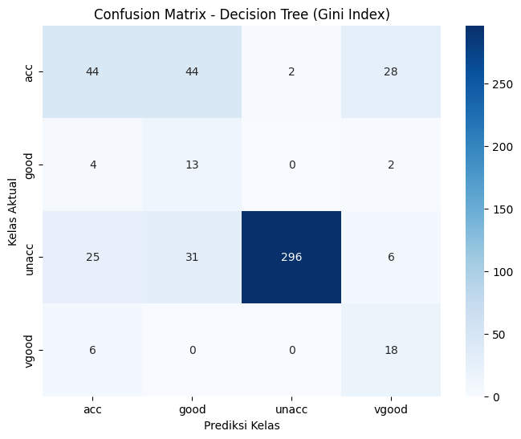
Classification Tree (Entropy)
#Confusion matrix
from sklearn.metrics import confusion_matrix
cm = confusion_matrix(y_test, y_pred_en)
print('Confusion matrix\n\n', cm)Confusion matrix
[[ 44 0 74 0]
[ 9 0 10 0]
[ 8 0 350 0]
[ 24 0 0 0]]#Classification report yang menampilkan precission, recall, f1-score
from sklearn.metrics import classification_report
print(classification_report(y_test, y_pred_en)) precision recall f1-score support
acc 0.52 0.37 0.43 118
good 0.00 0.00 0.00 19
unacc 0.81 0.98 0.88 358
vgood 0.00 0.00 0.00 24
accuracy 0.76 519
macro avg 0.33 0.34 0.33 519
weighted avg 0.67 0.76 0.71 519
/usr/local/lib/python3.12/dist-packages/sklearn/metrics/_classification.py:1565: UndefinedMetricWarning: Precision is ill-defined and being set to 0.0 in labels with no predicted samples. Use `zero_division` parameter to control this behavior.
_warn_prf(average, modifier, f"{metric.capitalize()} is", len(result))
/usr/local/lib/python3.12/dist-packages/sklearn/metrics/_classification.py:1565: UndefinedMetricWarning: Precision is ill-defined and being set to 0.0 in labels with no predicted samples. Use `zero_division` parameter to control this behavior.
_warn_prf(average, modifier, f"{metric.capitalize()} is", len(result))
/usr/local/lib/python3.12/dist-packages/sklearn/metrics/_classification.py:1565: UndefinedMetricWarning: Precision is ill-defined and being set to 0.0 in labels with no predicted samples. Use `zero_division` parameter to control this behavior.
_warn_prf(average, modifier, f"{metric.capitalize()} is", len(result))#Membuat heatmap confussion matrix
#Kelas
kelas = ['unacc', 'acc', 'good', 'vgood']
# Membuat Heatmap
plt.figure(figsize=(8, 6))
# 1. Menggunakan sns.heatmap
sns.heatmap(
cm,
annot=True, # Menampilkan nilai numerik di setiap sel
fmt='d', # Memastikan angka ditampilkan sebagai integer (bukan notasi ilmiah)
cmap='Greens',
xticklabels=kelas, # Label sumbu X (Prediksi)
yticklabels=kelas # Label sumbu Y (Aktual)
)
# 2. Menambahkan Label dan Judul
plt.title('Confusion Matrix - Decision Tree (Entropy)')
plt.xlabel('Prediksi Kelas')
plt.ylabel('Kelas Aktual')
plt.show()